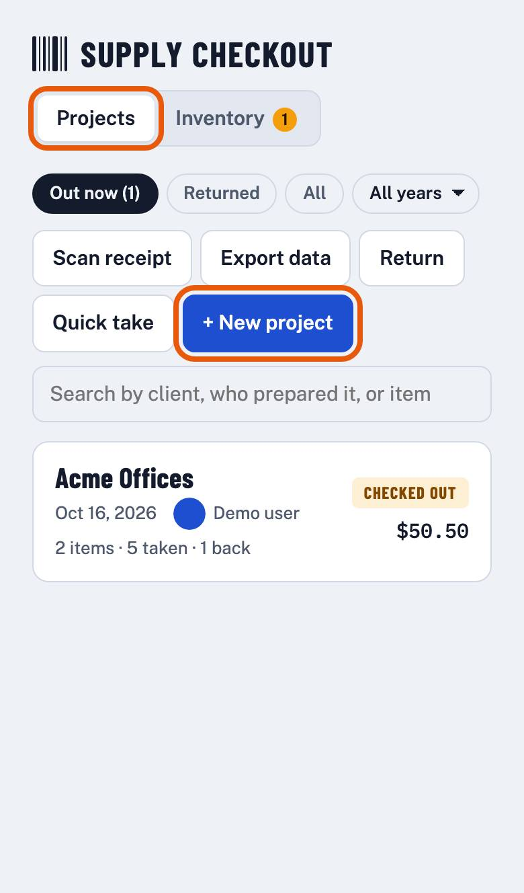
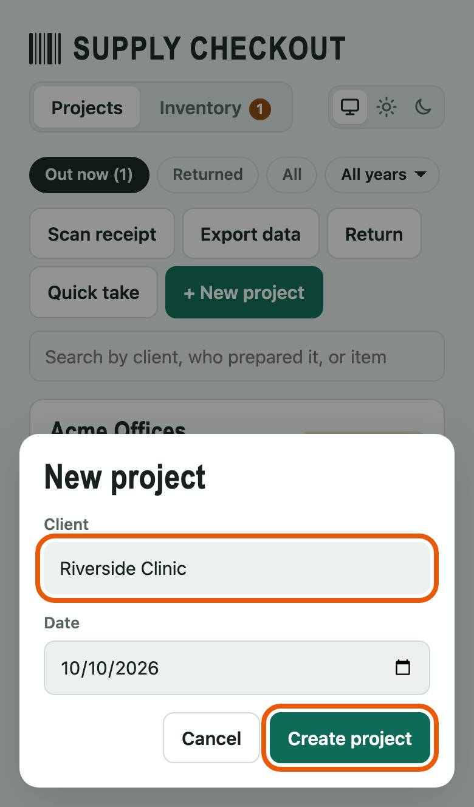
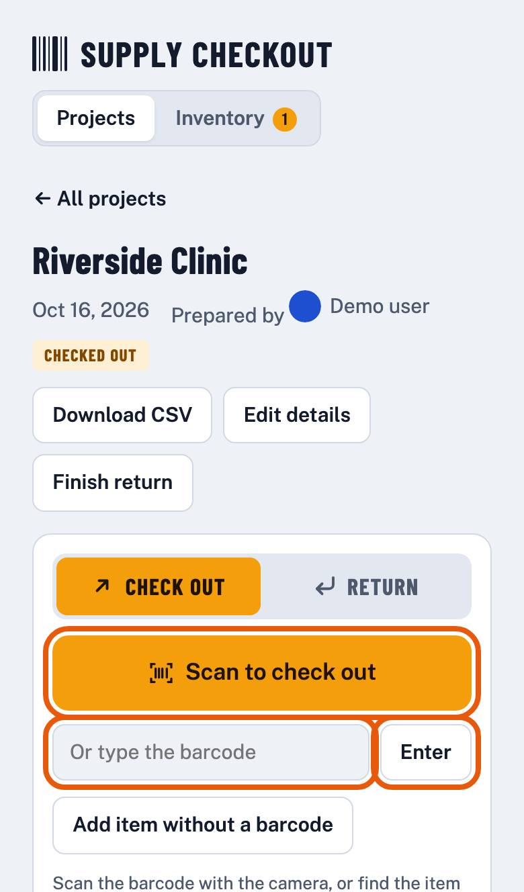
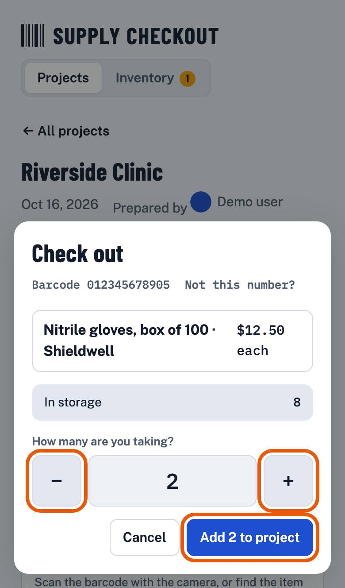
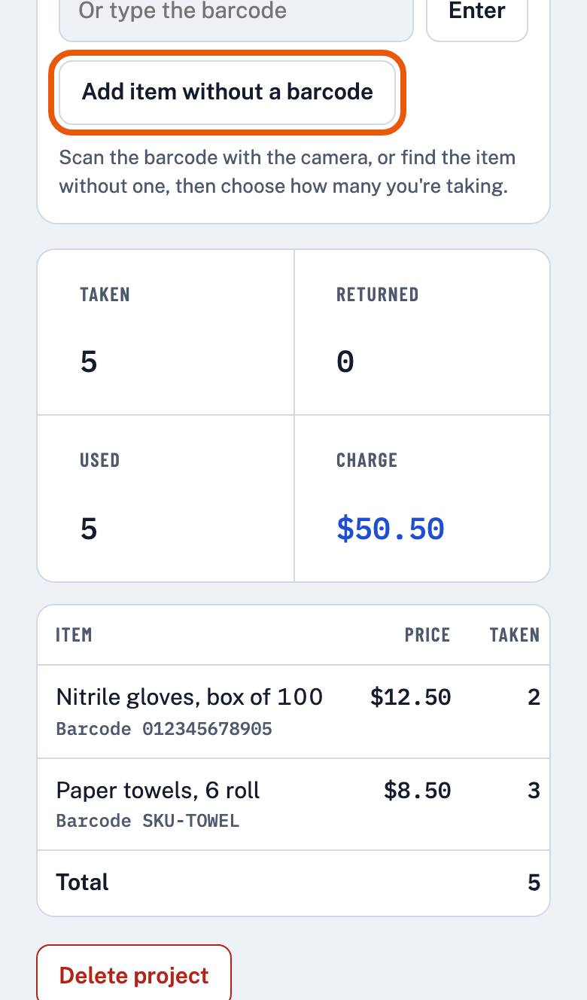
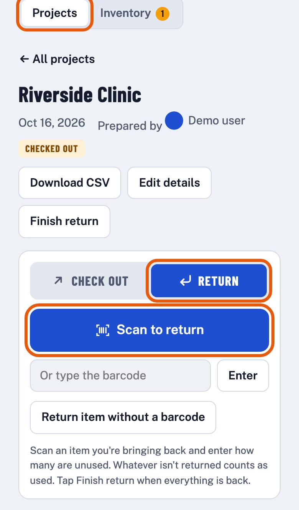
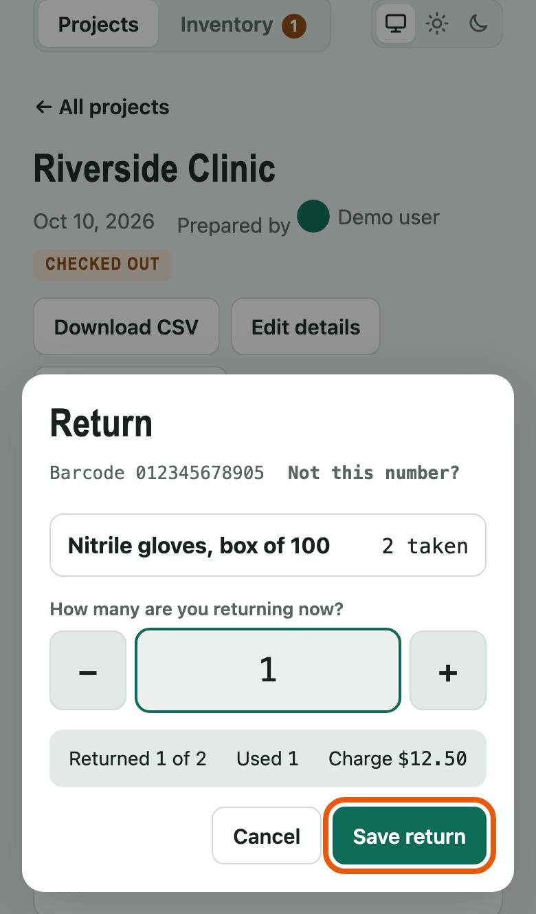
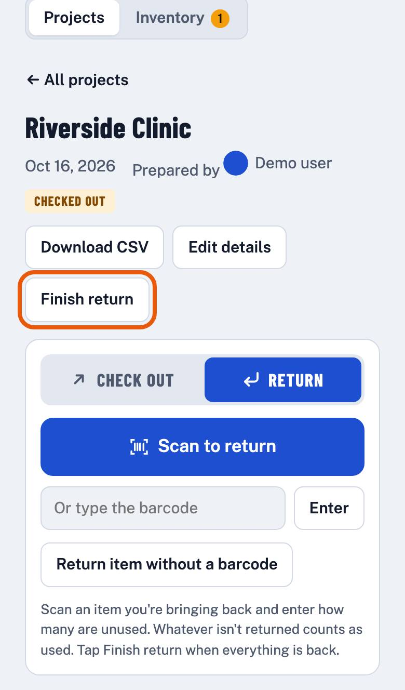

How-to Lesson 1
Check supplies out to a job and back in
About this lesson
- What you'll do
- Start a project for a client's job, scan what you take, and scan back what you didn't use. The project then shows what the client used and what to charge.
- How long it takes
- About 5 minutes the first time. After that, a minute or two a day.
- You need
- A phone with a camera, signed in to Supply Checkout.
-
Step 1 of 8
Start a project for the job
On Projects, tap + New project.
Already have a project for today's job? Tap it in the list instead, and go to step 3.

-
Step 2 of 8
Name the client
Type the client's name in Client. The date is today; change it if the job is on another day. Then tap Create project.

-
Step 3 of 8
Scan the first item
Tap Scan to check out and point the camera at the item's barcode. The first time, your phone asks to use the camera: tap Allow.
No camera, or the label won't scan? Type the number under the barcode in Or type the barcode and tap Enter.

-
Step 4 of 8
Say how many you're taking
Check the name: it's the item you scanned. Tap + or − to set how many, then tap Add 2 to project (the number is how many you chose).
An item that's new to your team? Type its name and price first. It's saved to the inventory for next time.

-
Step 5 of 8
Scan everything else you take
Do steps 3 and 4 for each item. Each one is listed on the project with how many you took, and the totals show what the client will be charged.
Something without a barcode, like rags? Tap Add item without a barcode and pick it from the list.

-
Step 6 of 8
Back from the job, switch to Return
Open the project again from Projects. Tap Return at the top of the scan box. The scan button now says Scan to return.

-
Step 7 of 8
Scan what came back unused
Scan each item you're bringing back. Say how many are coming back, then tap Save return. Whatever doesn't come back counts as used.

-
Step 8 of 8
Finish the return
When everything is back, tap Finished Return. The project is marked Returned and shows what was taken, returned and used, and the charge for the client.
If the project has company equipment that's still out, the app asks where each piece is first (lesson 3).
